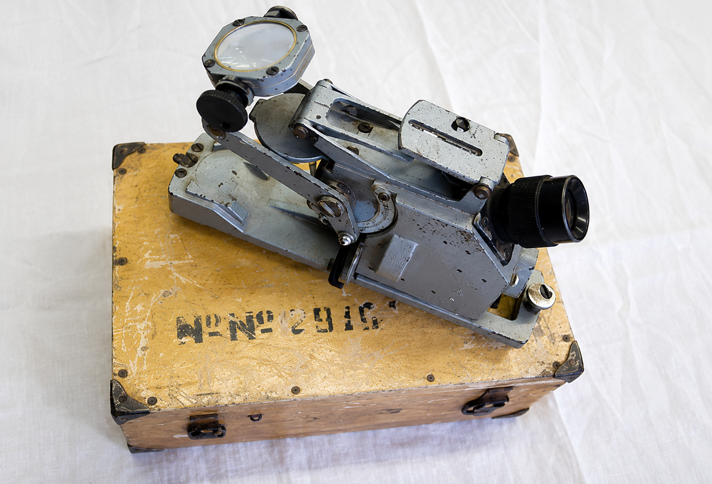
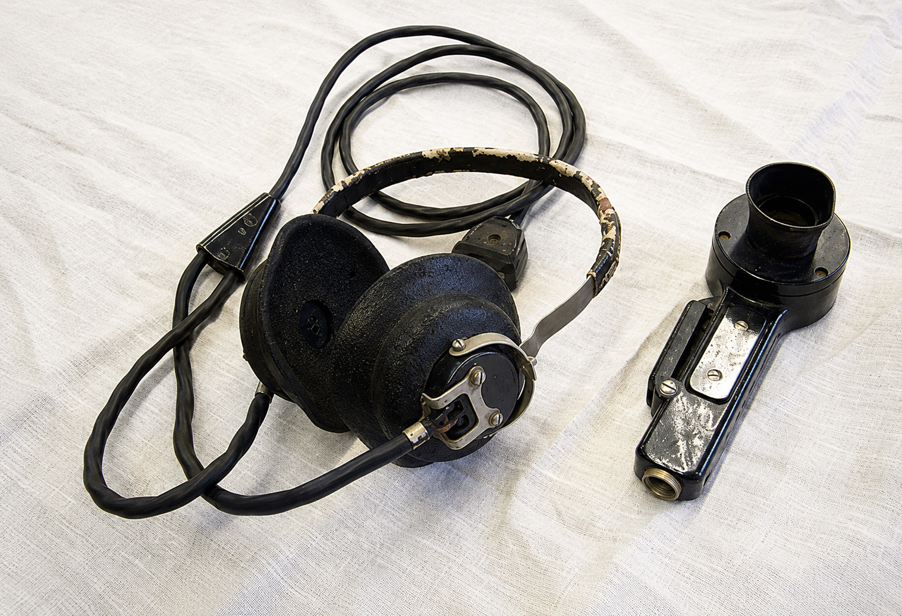
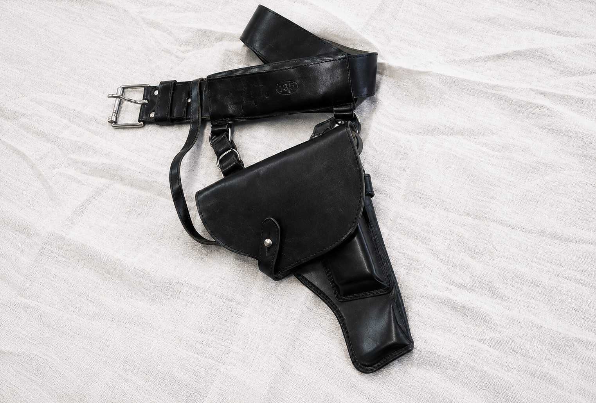
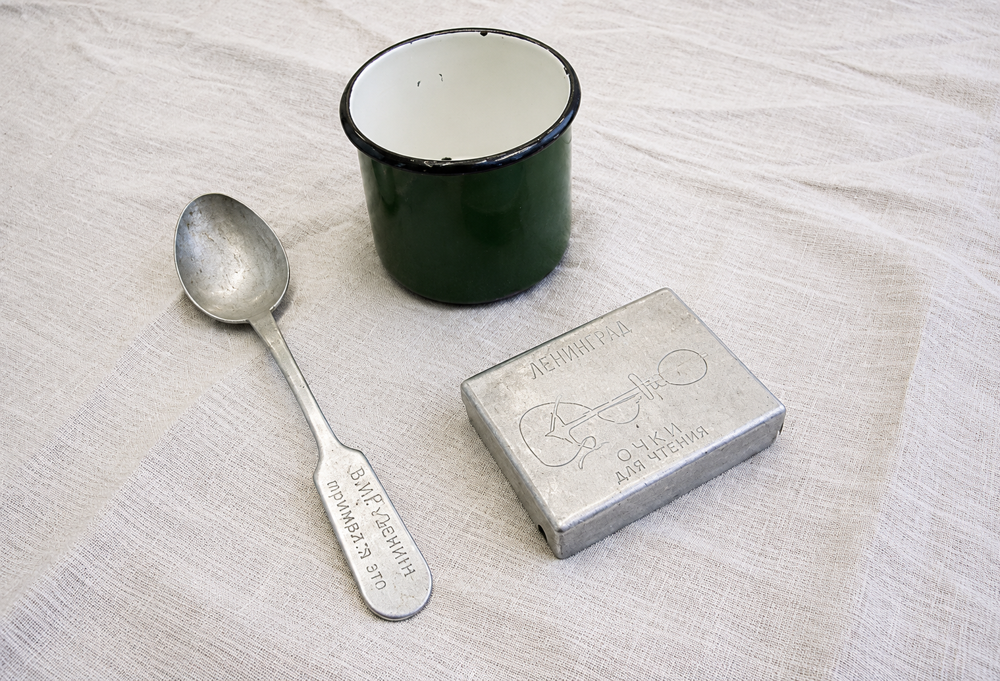
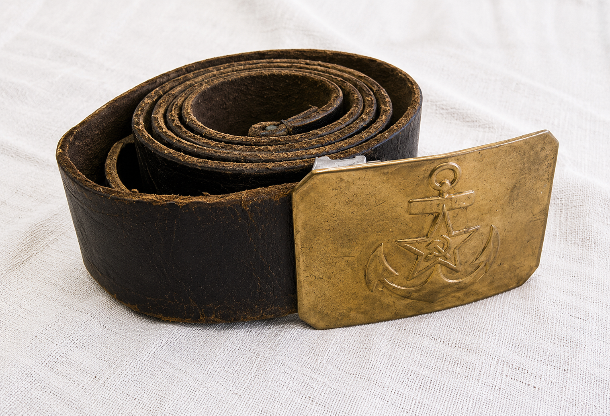
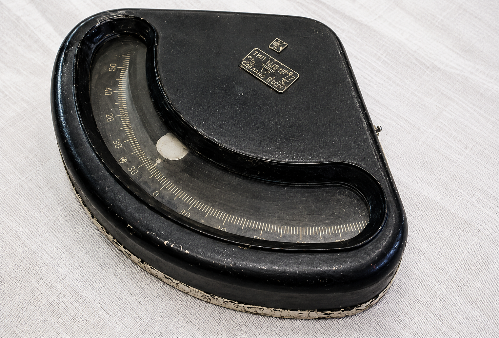
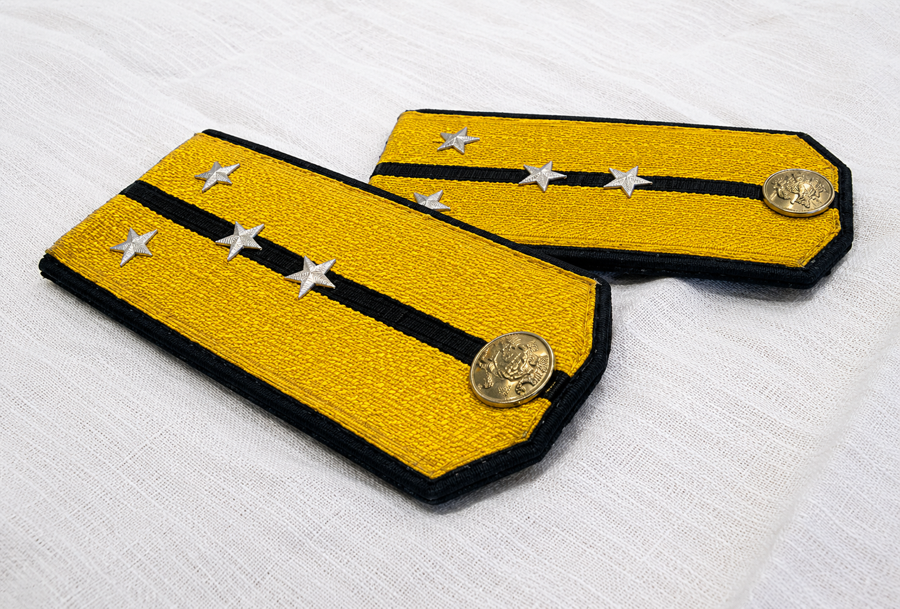
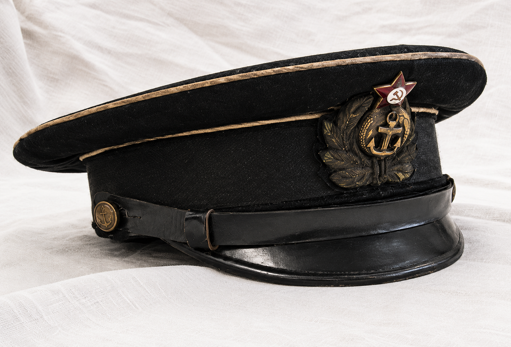
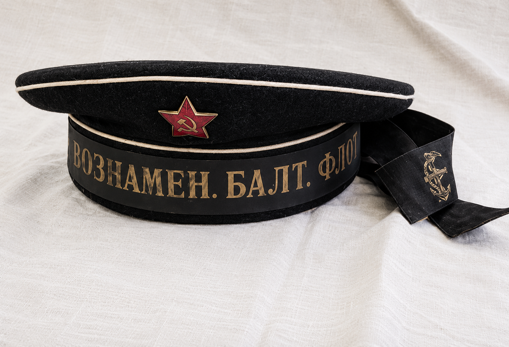

ЭКСПОНАТЫ

Пеленгатор оптический (прибор для определения положения судна в море). Входил в состав штурманского вооружения подводок с 1930-х гг.

Наушники военного радиста. 1940-е гг.

Ремень офицерский и кобура для пистолета ТТ. 1943 г.

Ложка армейская алюминиевая. Самодельная надпись на ручке: «За Родину! За Сталина!» 1940-е гг. Кружка армейская. 1940-е гг.

Ремень матросский. 1940-е гг.

Кренометр (прибор для измерения крена судна). 1940-е гг.

Погоны капитан-лейтенанта РК ВМФ образца 1943 г.

Фуражка офицера РК ВМФ. 1940-е гг.

Бескозырка матросская образца 1940-х гг.